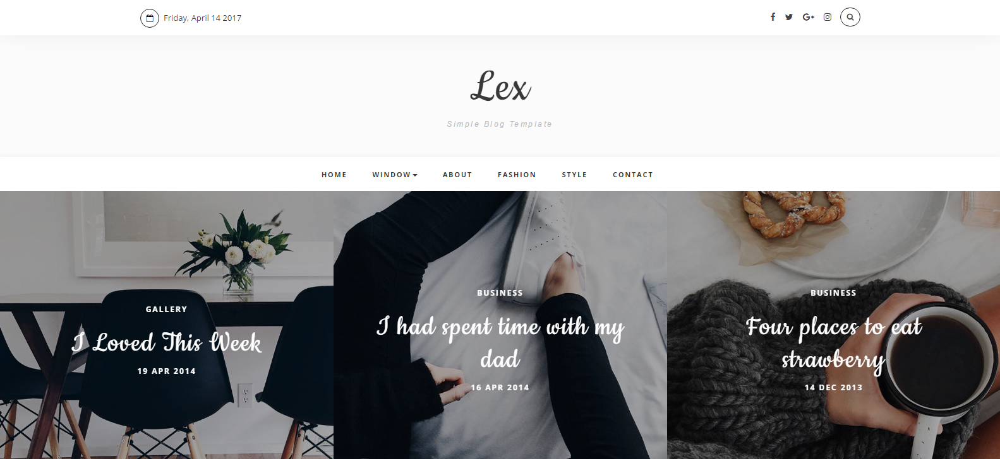
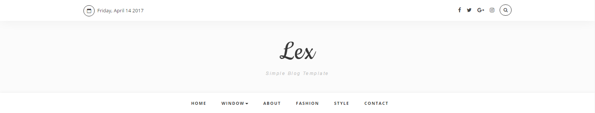
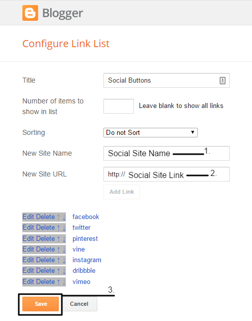
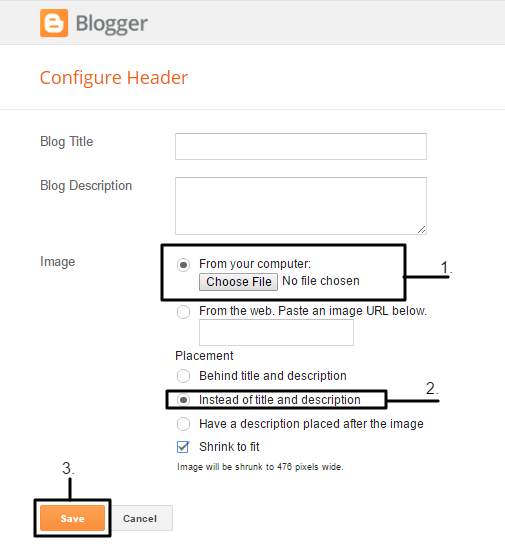
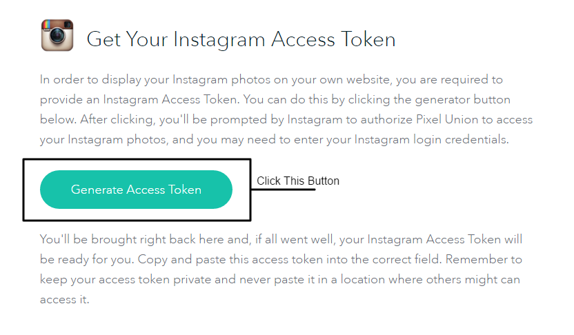
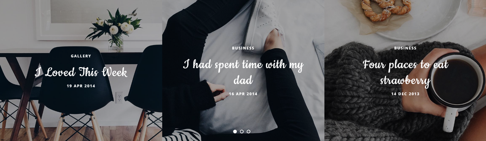
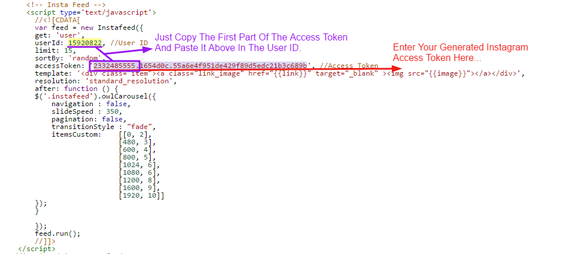
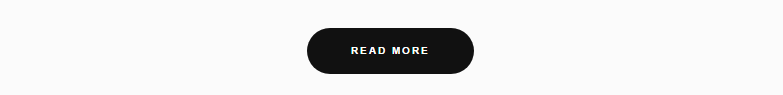

- Saglık Turizmi
- Medikal Turizm(Tıp Turizmi)
- Spa-Wellness Turizmi(Termal Turizm)
- Yaslı-Engelli Turizmi(65 Yas Üstü)
- Customization
- Header
- Slider
- Footer
- Widgets
- Shortscode
- Settings
Saglik Turizmi
Medikal Turizm
Tedavi ve tatilin aynı zamanda kaliteli ve uygun bütçeyle bir arada sunulduğu turizme Medikal Turizm deniliyor. Dünyada ve ülkemizde özellikle son yıllarda pek çok hasta tedavi + tatil (konaklama) + ulaşım (transfer) içeren sağlık paketlerini tercih ediyor. Bu sayede birçok insan hem tedavi görüyor, hem de tatil imkanı buluyor. Hastalar dilerse deniz kenarında, dilerse de alternatiflerin çok olduğu büyük metropollerde tedavi olabiliyor. Başka bir ülkenin yemeklerini keşfedip, kültürel tarihini öğrenme fırsatı yakalıyor. Operasyon sonrası iyileşme sürecini paket programlarla turistik aktivitelere dönüştürebiliyor. Dilerse tüm gün gerçekleştireceği turistik aktivelere katılıyor, dilerse de ardından SPA hizmetlerinden yararlanarak vücudunu rahatlatıyor. Böylece sağlık, hastane ve operasyon sürecinde oluşabilecek stresi yaşamıyor. Tüm bu avantajlardan yola çıkarak, son yıllarda medikal turizm alanında büyük hareketlilik yaşanmaktadır. Özellikle Avrupa ve Amerika’daki tedavi masraflarının yüksekliği kişileri hem tatil yapabilecekleri, hem de medikal servisleri daha ucuza alabilecekleri ülkelere yönlendirmeye başlamıştır. .
Note : Premium And Lifetime Support Only Provided To Full Version Buyers
It Is Restricted To Remove Our Credit Link Due To The Erasure Of The Credit Links Will Make Your Site To Redirect templateclue.com For Those Who Want To Remove Can Purchase The Template.
What You Get?
- Removed Footer Credits
- No Encrypted Codes
- Unlimited Support
- Full Access
- Lifetime Template Updates
- For Unlimited Domains
- And Much More...
Features
- Responsive
- SEO Friendly
- Featured Slider
- Label Post Widget
- Clean Look
- Homepage Share Button
- Responsive Dropdown Navigation
- Responsive Menu
- Breadcrumbs
- Related Posts with Thumb
- Search Box
- Information Message Box
- Nice Looking Code Box & Blockquotes
- Clean Looking Buttons
- Social Share Button
- Numbered Page Navigation
- Custom Recent Comment Widget
- Multi Author Box
- Clean Comment Style
- And more..
Installation
You Can Install The Template In Two Ways:
- Uploading: Go to your dashboard > Template > Backup / Restore > Upload the .xml.
- Direct Uploading: By Copy And Paste.Just Copy Your Blogger Template By Opening It In Notepad Select The Whole Code And Paste It Into Template Editor.
1. Uploading Method
- 
- 
Customize Template
Header Area
Logo Setting:Go to your Blogger Account - Your Blog & select Layout
Now In Header Widget Click On Edit
Upload Your Logo And Select "Instead of title and description" as the "Placement" option & Select Shrink To Fit.
 Social Links:- Go to Blogger Dashboard -> Layout -> Social Header [Social Buttons] -> Click On Edit Button
Note: The Social Site Name Sholud Be In Lower-Case.
Navigation:2 (Main)- Go to Blogger.com -> Your Blog -> Layout -> Main Menu -> Click On Edit Button
- 
Slider (Setup Guide)
It Works Automatically With New Post.
But Few Things Are Needed To Work It Perfectly:
- Your Blog Must Be Public From The Settings
- Your Blog Feed Set To Be Full From settings -> Other -> Site feed -> Allow Blog Feed (Full).
- Your Blog Post Has At Least One Label In Your Latest Posts.
- Please Try To Add High Quality Images.
- If There Is No Image, The Default Image Will Appear Please Change It If You Want To.
To Change The Default Image Search In Blogger Template Editor " // set your own image " And Replace The Default Image URL With Your Own URL.
Default Image "https://2.bp.blogspot.com/-P-GUNABxRKw/WC1q72iQ7PI/AAAAAAAAA7g/ByI_TtOtf_E4yMqd6z2NyoHAcBEk3y9EQCLcB/s1600/default%2Bimage.JPG" - Change The Number Of Posts Appear In The Slider. Default Value Is :- 7. Change It If You Want To By Searching "//Numpost3"
Footer Area
Instagram Widget:Change Instagram Username.
- Go to Blogger.com -> Your Blog -> Template -> Edit HTML And Find ( CTRL + F ) This:- <!-- Instagram Widget -->
- Now Change "//User ID (15920822)" , "//Access Token"
To Generate Instagram Access Token For Instagram Widget Than Go To This URL- http://instagram.pixelunion.net/ And Click Generate Access Token
Then You'll Get An Access Token Look Like This- 2332485555.1654d0c.55a6e4f951de429f89d5edc21b3c689b
Now Search In Blogger Template Editor This " <!-- Insta Feed --> " And Follow The Steps Given In The Below Image.
 Subscribe Widget:- Go to Blogger.com -> Your Blog -> Template -> Edit HTML And Find ( CTRL + F ) This:- <!-- Subscribe widget -->
- Now Change "feedburner_id" i.e(tumblr/zFuC)...Highlighted in Yellow

- GGo to Blogger.com -> Your Blog -> Template -> Edit HTML And Find ( CTRL + F ) This:- <!-- social-footer -->
- And Replace # With Your Links.
Widgets
About Me Widget(code)- Go to Blogger.com -> Your Blog -> Layout -> Click " Add a Gadget " In Sidebar Or In Other Section You Want To Add The Widget -> HTML/JavaScript
- Now Add This Code In The Content :
<div class="widget-about"> <div class="widget-about-img"> <a href="#about"><img src="https://4.bp.blogspot.com/--4kL9xiHDM8/WO-vkNz2IhI/AAAAAAAABA8/hT_03ozg6v0TDB7pPuL4Cy3R04ol7ZKQACLcB/s1600/about-wonderblog.jpg" alt="About Me" /> <!-- Person Pic --> </a> </div> <h4 class="widget-about-name h4-up"><a href="#">Diane Cooper</a></h4> <!-- Name --> <p>New York based interior designer & Lifestyle Guide Editor. Marfa tou leggings viral jack. Flannel flexitarian bespoke moon squid. <br />So glad you stopped by!</p> <!-- Bio --> <div class="widget-about-sig"> <a href=""><img src="https://2.bp.blogspot.com/--ZUJqZ4rKSU/WPBykxjn2aI/AAAAAAAABCE/RQwcbZRegmYuozn5XKKdRa4uWMljh4uVQCLcB/s1600/signature2.png" /> <!-- Signature Img --> </a> </div> </div>
- Replace The Image "src"
- Change The Name & The Bio
- Replace The Signature Image "#"
Shortscode
Buttons: - In the Post section, click on edit post or create a new post
- Click on HTML
- A code is written below use that code to display that Button link
<!-- Default Button (Red) --> <a class="btn" href="#your_link" target="_blank">Text</a>
Settings
Mobile VersionTo Use Responsive Design In Mobile Devices Than First You Need To Enable It.
Note:The Responsive Menu Link Sub Menu Will Not Work(Open) In The Desktop If You Resize Your Window It Is Only Work On Mobile Devices.
- Go to Blogger.com -> Your Blog -> Template -> Now In Mobile Section Click On Gear Button As Shown In Given Below Image
2. Click On "No. Show desktop template on mobile devices." And Than Click On Save.
Change The Post Date Format:Go to Blogger Dashboard -> Settings -> Language and Formatting -> Formatting -> Timestamp Format -> Set It To Date Instead Of Time.
Now Click On Save...